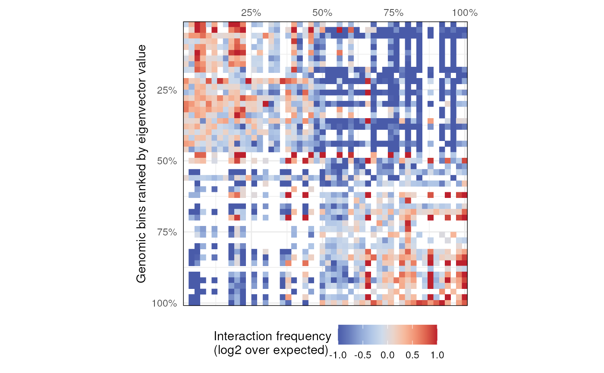
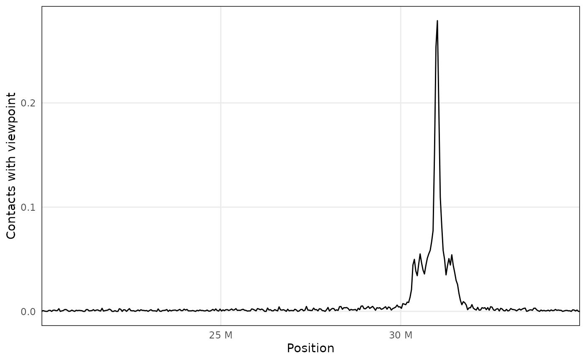
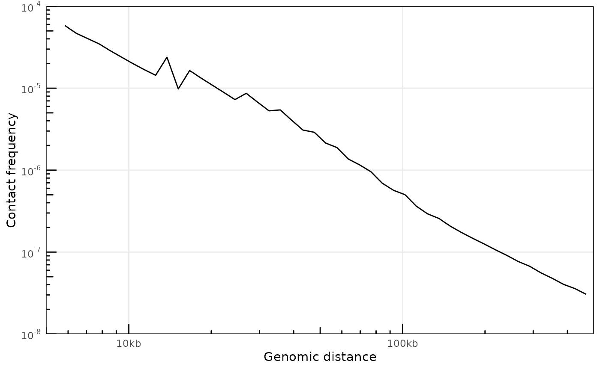
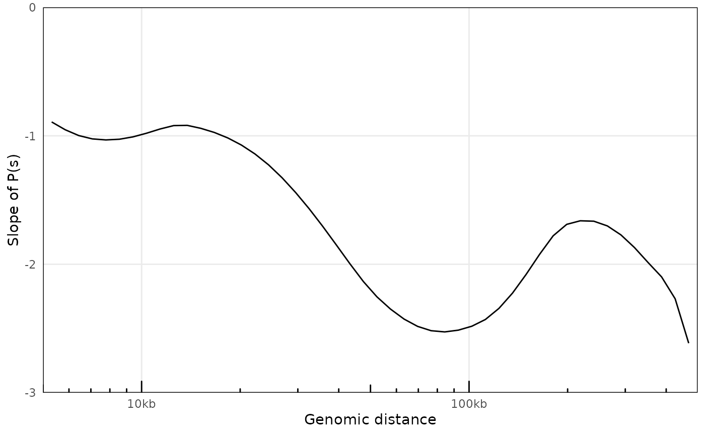
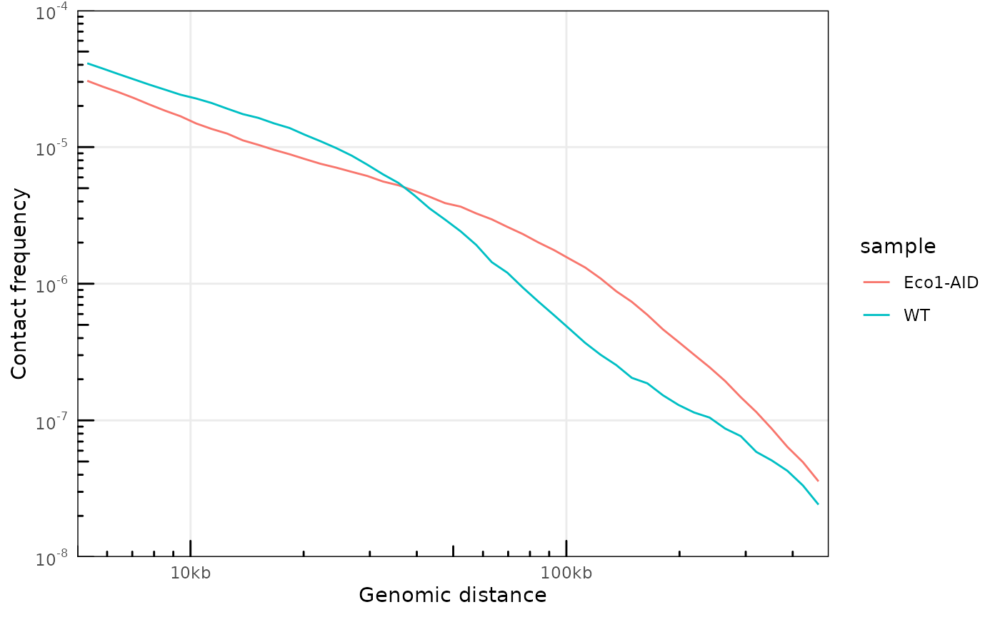
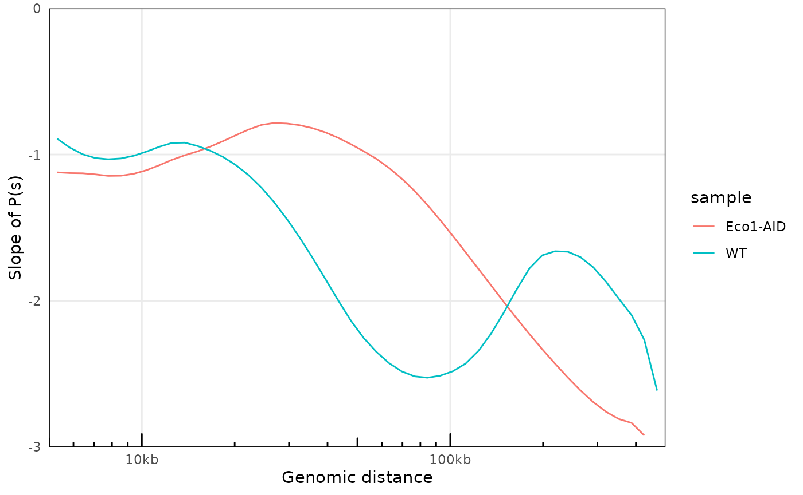

vignettes/HiContacts.Rmd
HiContacts.RmdContacts class
HiContacts package implements the new
Contacts S4 class. It is build on pre-existing Bioconductor
classes, namely InteractionSet,
GenomicInterations and ContactMatrix
(Lun, Perry & Ing-Simmons, F1000Research 2016), and
leverages them to import locally stored .(m)cool files. It
further provides analytical and
visualization tools to investigate contact maps
directly in R.
showClass("Contacts")
#> Class "Contacts" [package "HiContacts"]
#>
#> Slots:
#>
#> Name: fileName focus resolutions
#> Class: character characterOrNULL numeric
#>
#> Name: resolution interactions scores
#> Class: numeric GInteractions SimpleList
#>
#> Name: topologicalFeatures pairsFile metadata
#> Class: SimpleList characterOrNULL list
#>
#> Extends: "Annotated"
contacts <- contacts_yeast()
#> snapshotDate(): 2022-10-03
#> see ?HiContactsData and browseVignettes('HiContactsData') for documentation
#> loading from cache
contacts
#> `Contacts` object with 74,360 interactions over 802 regions
#> -------
#> fileName: "/github/home/.cache/R/ExperimentHub/444104d1ebd_7752"
#> focus: "II"
#> resolutions(5): 1000 2000 4000 8000 16000
#> current resolution: 1000
#> interactions: 74360
#> scores(2): raw balanced
#> topologicalFeatures: loops(0) borders(0) compartments(0) viewpoints(0)
#> pairsFile: N/A
#> metadata(0):
citation('HiContacts')
#>
#> To cite package 'HiContacts' in publications use:
#>
#> Serizay J (2022). _HiContacts: HiContacts: R interface to cool
#> files_. R package version 0.99.11,
#> <https://github.com/js2264/HiContacts>.
#>
#> A BibTeX entry for LaTeX users is
#>
#> @Manual{,
#> title = {HiContacts: HiContacts: R interface to cool files},
#> author = {Jacques Serizay},
#> year = {2022},
#> note = {R package version 0.99.11},
#> url = {https://github.com/js2264/HiContacts},
#> }.(m)/cool files as
Contacts objects
The HiContactsData package gives access to a range of
toy datasets stored by Bioconductor in the
ExperimentHub.
library(HiContacts)
library(HiContactsData)
cool_file <- HiContactsData('yeast_wt', format = 'cool')
#> snapshotDate(): 2022-10-03
#> see ?HiContactsData and browseVignettes('HiContactsData') for documentation
#> loading from cache
cool_file
#> EH7701
#> "/github/home/.cache/R/ExperimentHub/4445b181902_7751"The Contacts() function can be used to import a Hi-C
matrix locally stored as a cool/mcool file. It
creates a Contacts object.
range <- 'I:20000-80000' # range of interest
contacts <- Contacts(cool_file, focus = range)
summary(contacts)
#> `Contacts` object with 1,653 interactions over 59 regions
contacts
#> `Contacts` object with 1,653 interactions over 59 regions
#> -------
#> fileName: "/github/home/.cache/R/ExperimentHub/4445b181902_7751"
#> focus: "I:20,000-80,000"
#> resolutions(1): 1000
#> current resolution: 1000
#> interactions: 1653
#> scores(2): raw balanced
#> topologicalFeatures: loops(0) borders(0) compartments(0) viewpoints(0)
#> pairsFile: N/A
#> metadata(0):Contacts() works with .mcool files as well:
in this case, the user needs to specify the resolution at which count
values are recovered.
mcool_file <- HiContactsData('yeast_wt', format = 'mcool')
#> snapshotDate(): 2022-10-03
#> see ?HiContactsData and browseVignettes('HiContactsData') for documentation
#> loading from cache
range <- 'II:0-800000' # range of interest
lsCoolResolutions(mcool_file, verbose = TRUE)
#> resolutions(5): 1000 2000 4000 8000 16000
#>
# contacts <- Contacts(mcool_file, focus = range) # This would throw an error!
contacts <- Contacts(mcool_file, focus = range, res = 1000)
contacts
#> `Contacts` object with 73,257 interactions over 790 regions
#> -------
#> fileName: "/github/home/.cache/R/ExperimentHub/444104d1ebd_7752"
#> focus: "II:0-800,000"
#> resolutions(5): 1000 2000 4000 8000 16000
#> current resolution: 1000
#> interactions: 73257
#> scores(2): raw balanced
#> topologicalFeatures: loops(0) borders(0) compartments(0) viewpoints(0)
#> pairsFile: N/A
#> metadata(0):One can also extract a count matrix from a .(m)cool file
that is not centered at the diagonal. To do this, specify a
couple of coordinates in the focus argument using a
character string formatted as "... x ...":
contacts <- Contacts(mcool_file, focus = 'II:0-500000 x II:100000-600000', res = 1000)
is_symmetrical(contacts)
#> [1] FALSESlots for a Contacts object can be accessed using the
following getters:
fileName(contacts)
#> [1] "/github/home/.cache/R/ExperimentHub/444104d1ebd_7752"
focus(contacts)
#> [1] "II:0-500000 x II:100000-600000"
resolutions(contacts)
#> [1] 1000 2000 4000 8000 16000
resolution(contacts)
#> [1] 1000
interactions(contacts)
#> GInteractions object with 41468 interactions and 2 metadata columns:
#> seqnames1 ranges1 seqnames2 ranges2 | bin_id1
#> <Rle> <IRanges> <Rle> <IRanges> | <numeric>
#> [1] II 1-1000 --- II 105001-106000 | 232
#> [2] II 1-1000 --- II 119001-120000 | 232
#> [3] II 1-1000 --- II 126001-127000 | 232
#> [4] II 1-1000 --- II 136001-137000 | 232
#> [5] II 1-1000 --- II 255001-256000 | 232
#> ... ... ... ... ... ... . ...
#> [41464] II 498001-499000 --- II 586001-587000 | 730
#> [41465] II 498001-499000 --- II 587001-588000 | 730
#> [41466] II 498001-499000 --- II 591001-592000 | 730
#> [41467] II 498001-499000 --- II 594001-595000 | 730
#> [41468] II 499001-500000 --- II 499001-500000 | 731
#> bin_id2
#> <numeric>
#> [1] 337
#> [2] 351
#> [3] 358
#> [4] 368
#> [5] 487
#> ... ...
#> [41464] 818
#> [41465] 819
#> [41466] 823
#> [41467] 826
#> [41468] 731
#> -------
#> regions: 588 ranges and 3 metadata columns
#> seqinfo: 16 sequences from an unspecified genome
scores(contacts)
#> List of length 2
#> names(2): raw balanced
tail(scores(contacts, 1))
#> [1] 1 1 2 1 1 31
tail(scores(contacts, 'balanced'))
#> [1] 0.0006993195 0.0007046892 0.0012934069 0.0017022105 0.0008050573
#> [6] 0.0141594924
topologicalFeatures(contacts)
#> List of length 4
#> names(4): loops borders compartments viewpoints
pairsFile(contacts)
#> NULL
metadata(contacts)
#> list()Several extra functions are available as well:
seqinfo(contacts) ## To recover the `Seqinfo` object from the `.(m)cool` file
#> Seqinfo object with 16 sequences from an unspecified genome:
#> seqnames seqlengths isCircular genome
#> I 230218 <NA> <NA>
#> II 813184 <NA> <NA>
#> III 316620 <NA> <NA>
#> IV 1531933 <NA> <NA>
#> V 576874 <NA> <NA>
#> ... ... ... ...
#> XII 1078177 <NA> <NA>
#> XIII 924431 <NA> <NA>
#> XIV 784333 <NA> <NA>
#> XV 1091291 <NA> <NA>
#> XVI 948066 <NA> <NA>
bins(contacts) ## To bin the genome at the current resolution
#> GRanges object with 12079 ranges and 1 metadata column:
#> seqnames ranges strand | bin_id
#> <Rle> <IRanges> <Rle> | <integer>
#> I_1_1000 I 1-1000 * | 1
#> I_1001_2000 I 1001-2000 * | 2
#> I_2001_3000 I 2001-3000 * | 3
#> I_3001_4000 I 3001-4000 * | 4
#> I_4001_5000 I 4001-5000 * | 5
#> ... ... ... ... . ...
#> XVI_944001_945000 XVI 944001-945000 * | 12075
#> XVI_945001_946000 XVI 945001-946000 * | 12076
#> XVI_946001_947000 XVI 946001-947000 * | 12077
#> XVI_947001_948000 XVI 947001-948000 * | 12078
#> XVI_948001_948066 XVI 948001-948066 * | 12079
#> -------
#> seqinfo: 16 sequences from an unspecified genome
regions(contacts) ## To extract unique regions of the contact matrix
#> GRanges object with 588 ranges and 3 metadata columns:
#> seqnames ranges strand | chr center bin_id
#> <Rle> <IRanges> <Rle> | <Rle> <integer> <integer>
#> II_1_1000 II 1-1000 * | II 500 232
#> II_1001_2000 II 1001-2000 * | II 1500 233
#> II_5001_6000 II 5001-6000 * | II 5500 237
#> II_6001_7000 II 6001-7000 * | II 6500 238
#> II_7001_8000 II 7001-8000 * | II 7500 239
#> ... ... ... ... . ... ... ...
#> II_593001_594000 II 593001-594000 * | II 593500 825
#> II_594001_595000 II 594001-595000 * | II 594500 826
#> II_595001_596000 II 595001-596000 * | II 595500 827
#> II_596001_597000 II 596001-597000 * | II 596500 828
#> II_597001_598000 II 597001-598000 * | II 597500 829
#> -------
#> seqinfo: 16 sequences from an unspecified genome
anchors(contacts) ## To extract "first" and "second" anchors for each interaction
#> $first
#> GRanges object with 41468 ranges and 3 metadata columns:
#> seqnames ranges strand | chr center bin_id
#> <Rle> <IRanges> <Rle> | <Rle> <integer> <integer>
#> [1] II 1-1000 * | II 500 232
#> [2] II 1-1000 * | II 500 232
#> [3] II 1-1000 * | II 500 232
#> [4] II 1-1000 * | II 500 232
#> [5] II 1-1000 * | II 500 232
#> ... ... ... ... . ... ... ...
#> [41464] II 498001-499000 * | II 498500 730
#> [41465] II 498001-499000 * | II 498500 730
#> [41466] II 498001-499000 * | II 498500 730
#> [41467] II 498001-499000 * | II 498500 730
#> [41468] II 499001-500000 * | II 499500 731
#> -------
#> seqinfo: 16 sequences from an unspecified genome
#>
#> $second
#> GRanges object with 41468 ranges and 3 metadata columns:
#> seqnames ranges strand | chr center bin_id
#> <Rle> <IRanges> <Rle> | <Rle> <integer> <integer>
#> [1] II 105001-106000 * | II 105500 337
#> [2] II 119001-120000 * | II 119500 351
#> [3] II 126001-127000 * | II 126500 358
#> [4] II 136001-137000 * | II 136500 368
#> [5] II 255001-256000 * | II 255500 487
#> ... ... ... ... . ... ... ...
#> [41464] II 586001-587000 * | II 586500 818
#> [41465] II 587001-588000 * | II 587500 819
#> [41466] II 591001-592000 * | II 591500 823
#> [41467] II 594001-595000 * | II 594500 826
#> [41468] II 499001-500000 * | II 499500 731
#> -------
#> seqinfo: 16 sequences from an unspecified genomeAdd topologicalFeatures using GRanges or
Pairs.
topologicalFeatures(contacts, 'viewpoints') <- GRanges("II:300000-320000")
topologicalFeatures(contacts)
#> List of length 4
#> names(4): loops borders compartments viewpoints
topologicalFeatures(contacts, 'viewpoints')
#> GRanges object with 1 range and 0 metadata columns:
#> seqnames ranges strand
#> <Rle> <IRanges> <Rle>
#> [1] II 300000-320000 *
#> -------
#> seqinfo: 1 sequence from an unspecified genome; no seqlengthsContacts
Using the as() function, Contacts can be
coerced in GInteractions, ContactMatrix and
matrix seamlessly.
as(contacts, "GInteractions")
#> GInteractions object with 41468 interactions and 2 metadata columns:
#> seqnames1 ranges1 seqnames2 ranges2 | bin_id1
#> <Rle> <IRanges> <Rle> <IRanges> | <numeric>
#> [1] II 1-1000 --- II 105001-106000 | 232
#> [2] II 1-1000 --- II 119001-120000 | 232
#> [3] II 1-1000 --- II 126001-127000 | 232
#> [4] II 1-1000 --- II 136001-137000 | 232
#> [5] II 1-1000 --- II 255001-256000 | 232
#> ... ... ... ... ... ... . ...
#> [41464] II 498001-499000 --- II 586001-587000 | 730
#> [41465] II 498001-499000 --- II 587001-588000 | 730
#> [41466] II 498001-499000 --- II 591001-592000 | 730
#> [41467] II 498001-499000 --- II 594001-595000 | 730
#> [41468] II 499001-500000 --- II 499001-500000 | 731
#> bin_id2
#> <numeric>
#> [1] 337
#> [2] 351
#> [3] 358
#> [4] 368
#> [5] 487
#> ... ...
#> [41464] 818
#> [41465] 819
#> [41466] 823
#> [41467] 826
#> [41468] 731
#> -------
#> regions: 588 ranges and 3 metadata columns
#> seqinfo: 16 sequences from an unspecified genome
as(contacts, "ContactMatrix")
#> class: ContactMatrix
#> dim: 588 588
#> type: matrix
#> rownames: NULL
#> colnames: NULL
#> metadata(0):
#> regions: 588
as(contacts, "matrix")[1:10, 1:10]
#> [,1] [,2] [,3] [,4] [,5] [,6] [,7] [,8] [,9] [,10]
#> [1,] NA NA NA NA NA NA NA NA NA NA
#> [2,] NA NA NA NA NA NA NA NA NA NA
#> [3,] NA NA NA NA NA NA NA NA NA NA
#> [4,] NA NA NA NA NA NA NA NA NA NA
#> [5,] NA NA NA NA NA NA NA NA NA NA
#> [6,] NA NA NA NA NA NA NA NA NA NA
#> [7,] NA NA NA NA NA NA NA NA NA NA
#> [8,] NA NA NA NA NA NA NA NA NA NA
#> [9,] NA NA NA NA NA NA NA NA NA NA
#> [10,] NA NA NA NA NA NA NA NA NA NAThe plotMatrix function takes a Contacts
object and plots it as a heatmap.
Use the use.scores argument to specify which type of
interaction scores to use in the contact maps (e.g. raw,
balanced, …). By default, plotMatrix() looks
for balanced scores. If they are not stored in the original
.(m)/cool file, plotMatrix() simply takes the
first scores available.
plotMatrix(contacts, use.scores = 'balanced', limits = c(-4, -1), dpi = 120)
mcool_file <- HiContactsData('yeast_wt', format = 'mcool')
#> snapshotDate(): 2022-10-03
#> see ?HiContactsData and browseVignettes('HiContactsData') for documentation
#> loading from cache
loops <- system.file("extdata", 'S288C-loops.bedpe', package = 'HiContacts') |>
rtracklayer::import() |>
InteractionSet::makeGInteractionsFromGRangesPairs()
p <- Contacts(mcool_file, focus = 'IV', res = 1000) |>
plotMatrix(loops = loops, limits = c(-4, -1), dpi = 120)
borders <- system.file("extdata", 'S288C-borders.bed', package = 'HiContacts') |>
rtracklayer::import()
p <- Contacts(mcool_file, focus = 'IV', res = 1000) |>
plotMatrix(loops = loops, borders = borders, limits = c(-4, -1), dpi = 120)
contacts <- Contacts(mcool_file, focus = range, res = 2000)
contacts_subset <- contacts['II:20000-50000']
InteractionSet::boundingBox(interactions(contacts))
#> GInteractions object with 1 interaction and 0 metadata columns:
#> seqnames1 ranges1 seqnames2 ranges2
#> <Rle> <IRanges> <Rle> <IRanges>
#> 1 II 1-800000 --- II 1-800000
#> -------
#> regions: 1 ranges and 0 metadata columns
#> seqinfo: 16 sequences from an unspecified genome
InteractionSet::boundingBox(interactions(contacts_subset))
#> GInteractions object with 1 interaction and 0 metadata columns:
#> seqnames1 ranges1 seqnames2 ranges2
#> <Rle> <IRanges> <Rle> <IRanges>
#> 1 II 20001-50000 --- II 20001-50000
#> -------
#> regions: 1 ranges and 0 metadata columns
#> seqinfo: 16 sequences from an unspecified genome
mcool_file <- HiContactsData('mESCs', format = 'mcool')
#> snapshotDate(): 2022-10-03
#> see ?HiContactsData and browseVignettes('HiContactsData') for documentation
#> loading from cache
contacts <- Contacts(mcool_file, focus = 'chr2', res = 160000)
autocorrelated <- autocorrelate(contacts, ignore_ndiags = 20)
#> Warning: The `x` argument of `as_tibble.matrix()` must have unique column names if
#> `.name_repair` is omitted as of tibble 2.0.0.
#> ℹ Using compatibility `.name_repair`.
#> ℹ The deprecated feature was likely used in the HiContacts package.
#> Please report the issue at <https://github.com/js2264/HiContacts/issues>.
scores(autocorrelated)
#> List of length 1
#> names(1): autocorrelation
summary(scores(autocorrelated, 1))
#> Min. 1st Qu. Median Mean 3rd Qu. Max. NA's
#> -0.75 -0.41 -0.07 -0.04 0.30 1.00 41857
mcool_file <- HiContactsData('mESCs', format = 'mcool')
#> snapshotDate(): 2022-10-03
#> see ?HiContactsData and browseVignettes('HiContactsData') for documentation
#> loading from cache
contacts <- Contacts(mcool_file, focus = 'chr18:20000000-35000000', res = 40000)
detrended_contacts <- detrend(contacts)
cowplot::plot_grid(
plotMatrix(detrended_contacts, use.scores = 'expected', dpi = 120),
plotMatrix(detrended_contacts, use.scores = 'detrended', scale = 'linear', limits = c(-3, 3), dpi = 120)
)
mcool_file_1 <- HiContactsData('yeast_eco1', format = 'mcool')
#> snapshotDate(): 2022-10-03
#> see ?HiContactsData and browseVignettes('HiContactsData') for documentation
#> loading from cache
mcool_file_2 <- HiContactsData('yeast_wt', format = 'mcool')
#> snapshotDate(): 2022-10-03
#> see ?HiContactsData and browseVignettes('HiContactsData') for documentation
#> loading from cache
contacts_1 <- Contacts(mcool_file_1, focus = 'II', res = 2000)
contacts_1 <- contacts_1['II:1-300000']
contacts_2 <- Contacts(mcool_file_2, focus = 'II', res = 2000)
contacts_2 <- contacts_2['II:1-300000']
merged_contacts <- merge(contacts_1, contacts_2)
contacts_1
#> `Contacts` object with 9,607 interactions over 147 regions
#> -------
#> fileName: "/github/home/.cache/R/ExperimentHub/4441848b5f5_7754"
#> focus: "II:1-300,000"
#> resolutions(5): 1000 2000 4000 8000 16000
#> current resolution: 2000
#> interactions: 9607
#> scores(2): raw balanced
#> topologicalFeatures: loops(0) borders(0) compartments(0) viewpoints(0)
#> pairsFile: N/A
#> metadata(0):
contacts_2
#> `Contacts` object with 6,933 interactions over 147 regions
#> -------
#> fileName: "/github/home/.cache/R/ExperimentHub/444104d1ebd_7752"
#> focus: "II:1-300,000"
#> resolutions(5): 1000 2000 4000 8000 16000
#> current resolution: 2000
#> interactions: 6933
#> scores(2): raw balanced
#> topologicalFeatures: loops(0) borders(0) compartments(0) viewpoints(0)
#> pairsFile: N/A
#> metadata(0):
merged_contacts
#> `Contacts` object with 9,748 interactions over 147 regions
#> -------
#> fileName: ""
#> focus: "II:1-300,000"
#> resolutions(5): 1000 2000 4000 8000 16000
#> current resolution: 2000
#> interactions: 9748
#> scores(2): raw balanced
#> topologicalFeatures: ()
#> pairsFile: N/A
#> metadata(2): merging operation
mcool_file_1 <- HiContactsData('yeast_eco1', format = 'mcool')
#> snapshotDate(): 2022-10-03
#> see ?HiContactsData and browseVignettes('HiContactsData') for documentation
#> loading from cache
mcool_file_2 <- HiContactsData('yeast_wt', format = 'mcool')
#> snapshotDate(): 2022-10-03
#> see ?HiContactsData and browseVignettes('HiContactsData') for documentation
#> loading from cache
contacts_1 <- Contacts(mcool_file_1, focus = 'II', res = 2000)
contacts_2 <- Contacts(mcool_file_2, focus = 'II', res = 2000)
div_contacts <- divide(contacts_1, by = contacts_2)
div_contacts
#> `Contacts` object with 66,607 interactions over 404 regions
#> -------
#> fileName: "4441848b5f5_7754 / 444104d1ebd_7752"
#> focus: "II"
#> resolutions(1): 2000
#> current resolution: 2000
#> interactions: 66607
#> scores(1): ratio
#> topologicalFeatures: ()
#> pairsFile: N/A
#> metadata(0):
p <- cowplot::plot_grid(
plotMatrix(contacts_1, use.scores = 'balanced', scale = 'log10', limits = c(-4, -1)),
plotMatrix(contacts_2, use.scores = 'balanced', scale = 'log10', limits = c(-4, -1)),
plotMatrix(div_contacts, use.scores = 'ratio', scale = 'log2', limits = c(-2, 2), cmap = bwrColors())
)
mcool_file <- HiContactsData('mESCs', format = 'mcool')
#> snapshotDate(): 2022-10-03
#> see ?HiContactsData and browseVignettes('HiContactsData') for documentation
#> loading from cache
contacts <- Contacts(mcool_file, focus = 'chr18:20000000-35000000', res = 40000)
v4C <- virtual4C(contacts, viewpoint = GRanges('chr18:31000000-31050000'))
plot4C(v4C, aes(x = center, y = score))
mcool_file <- HiContactsData('yeast_wt', format = 'mcool')
#> snapshotDate(): 2022-10-03
#> see ?HiContactsData and browseVignettes('HiContactsData') for documentation
#> loading from cache
contacts <- Contacts(mcool_file, res = 1000)
cisTransRatio(contacts)
#> # A tibble: 16 × 6
#> # Groups: chr [16]
#> chr cis trans n_total cis_pct trans_pct
#> <fct> <dbl> <dbl> <dbl> <dbl> <dbl>
#> 1 I 186326 96736 283062 0.658 0.342
#> 2 II 942728 273941 1216669 0.775 0.225
#> 3 III 303980 127069 431049 0.705 0.295
#> 4 IV 1858062 418193 2276255 0.816 0.184
#> 5 V 607090 220861 827951 0.733 0.267
#> 6 VI 280282 127768 408050 0.687 0.313
#> 7 VII 1228532 335891 1564423 0.785 0.215
#> 8 VIII 574086 205114 779200 0.737 0.263
#> 9 IX 474182 179273 653455 0.726 0.274
#> 10 X 834654 259233 1093887 0.763 0.237
#> 11 XI 775240 245889 1021129 0.759 0.241
#> 12 XII 1182742 278049 1460791 0.810 0.190
#> 13 XIII 1084810 296314 1381124 0.785 0.215
#> 14 XIV 852516 256624 1109140 0.769 0.231
#> 15 XV 1274066 351117 1625183 0.784 0.216
#> 16 XVI 1070152 313348 1383500 0.774 0.226
# Without a pairs file
mcool_file <- HiContactsData('yeast_wt', format = 'mcool')
#> snapshotDate(): 2022-10-03
#> see ?HiContactsData and browseVignettes('HiContactsData') for documentation
#> loading from cache
contacts <- Contacts(mcool_file, res = 1000)
ps <- distanceLaw(contacts)
#> pairsFile not specified. The P(s) curve will be an approximation.
plotPs(ps, aes(x = binned_distance, y = norm_p))
#> Warning: Removed 18 row(s) containing missing values (geom_path).
# With a pairs file
pairsFile(contacts) <- HiContactsData('yeast_wt', format = 'pairs.gz')
#> snapshotDate(): 2022-10-03
#> see ?HiContactsData and browseVignettes('HiContactsData') for documentation
#> loading from cache
ps <- distanceLaw(contacts)
#> Importing pairs file /github/home/.cache/R/ExperimentHub/4442f6be9b2_7753 in memory. This may take a while...
plotPs(ps, aes(x = binned_distance, y = norm_p))
#> Warning: Removed 67 row(s) containing missing values (geom_path).
plotPsSlope(ps, aes(x = binned_distance, y = slope))
#> Warning: Removed 67 row(s) containing missing values (geom_path).
# Comparing P(s) curves
c1 <- Contacts(
HiContactsData('yeast_wt', format = 'mcool'),
res = 1000,
pairs = HiContactsData('yeast_wt', format = 'pairs.gz')
)
#> snapshotDate(): 2022-10-03
#> see ?HiContactsData and browseVignettes('HiContactsData') for documentation
#> loading from cache
#> snapshotDate(): 2022-10-03
#> see ?HiContactsData and browseVignettes('HiContactsData') for documentation
#> loading from cache
c2 <- Contacts(
HiContactsData('yeast_eco1', format = 'mcool'),
res = 1000,
pairs = HiContactsData('yeast_eco1', format = 'pairs.gz')
)
#> snapshotDate(): 2022-10-03
#> see ?HiContactsData and browseVignettes('HiContactsData') for documentation
#> loading from cache
#> snapshotDate(): 2022-10-03
#> see ?HiContactsData and browseVignettes('HiContactsData') for documentation
#> loading from cache
ps_1 <- distanceLaw(c1) |> mutate(sample = 'WT')
#> Importing pairs file /github/home/.cache/R/ExperimentHub/4442f6be9b2_7753 in memory. This may take a while...
ps_2 <- distanceLaw(c2) |> mutate(sample = 'Eco1-AID')
#> Importing pairs file /github/home/.cache/R/ExperimentHub/44423956853_7755 in memory. This may take a while...
ps <- rbind(ps_1, ps_2)
plotPs(ps, aes(x = binned_distance, y = norm_p, group = sample, color = sample))
#> Warning: Removed 134 row(s) containing missing values (geom_path).
plotPsSlope(ps, aes(x = binned_distance, y = slope, group = sample, color = sample))
#> Warning: Removed 135 row(s) containing missing values (geom_path).
sessionInfo()
#> R version 4.2.1 (2022-06-23)
#> Platform: x86_64-pc-linux-gnu (64-bit)
#> Running under: Ubuntu 20.04.5 LTS
#>
#> Matrix products: default
#> BLAS: /usr/lib/x86_64-linux-gnu/openblas-pthread/libblas.so.3
#> LAPACK: /usr/lib/x86_64-linux-gnu/openblas-pthread/liblapack.so.3
#>
#> locale:
#> [1] LC_CTYPE=en_US.UTF-8 LC_NUMERIC=C
#> [3] LC_TIME=en_US.UTF-8 LC_COLLATE=en_US.UTF-8
#> [5] LC_MONETARY=en_US.UTF-8 LC_MESSAGES=en_US.UTF-8
#> [7] LC_PAPER=en_US.UTF-8 LC_NAME=C
#> [9] LC_ADDRESS=C LC_TELEPHONE=C
#> [11] LC_MEASUREMENT=en_US.UTF-8 LC_IDENTIFICATION=C
#>
#> attached base packages:
#> [1] stats4 stats graphics grDevices utils datasets methods
#> [8] base
#>
#> other attached packages:
#> [1] HiContacts_0.99.11 HiContactsData_0.99.5 ExperimentHub_2.5.0
#> [4] AnnotationHub_3.5.2 BiocFileCache_2.5.2 dbplyr_2.2.1
#> [7] GenomicRanges_1.49.1 GenomeInfoDb_1.33.7 IRanges_2.31.2
#> [10] S4Vectors_0.35.4 BiocGenerics_0.43.4 dplyr_1.0.10
#> [13] ggplot2_3.3.6 BiocStyle_2.25.0
#>
#> loaded via a namespace (and not attached):
#> [1] backports_1.4.1 Hmisc_4.7-1
#> [3] systemfonts_1.0.4 igraph_1.3.5
#> [5] lazyeval_0.2.2 splines_4.2.1
#> [7] BiocParallel_1.31.13 digest_0.6.29
#> [9] ensembldb_2.21.5 htmltools_0.5.3
#> [11] fansi_1.0.3 magrittr_2.0.3
#> [13] checkmate_2.1.0 memoise_2.0.1
#> [15] BSgenome_1.65.2 cluster_2.1.4
#> [17] tzdb_0.3.0 InteractionSet_1.25.0
#> [19] Biostrings_2.65.6 matrixStats_0.62.0
#> [21] vroom_1.6.0 pkgdown_2.0.6.9000
#> [23] prettyunits_1.1.1 jpeg_0.1-9
#> [25] colorspace_2.0-3 blob_1.2.3
#> [27] rappdirs_0.3.3 textshaping_0.3.6
#> [29] xfun_0.33 crayon_1.5.2
#> [31] RCurl_1.98-1.9 jsonlite_1.8.2
#> [33] VariantAnnotation_1.43.3 survival_3.4-0
#> [35] glue_1.6.2 gtable_0.3.1
#> [37] zlibbioc_1.43.0 XVector_0.37.1
#> [39] DelayedArray_0.23.2 Rhdf5lib_1.19.2
#> [41] scales_1.2.1 DBI_1.1.3
#> [43] Rcpp_1.0.9 xtable_1.8-4
#> [45] progress_1.2.2 htmlTable_2.4.1
#> [47] reticulate_1.26 foreign_0.8-83
#> [49] bit_4.0.4 Formula_1.2-4
#> [51] htmlwidgets_1.5.4 httr_1.4.4
#> [53] RColorBrewer_1.1-3 ellipsis_0.3.2
#> [55] farver_2.1.1 pkgconfig_2.0.3
#> [57] XML_3.99-0.11 Gviz_1.41.1
#> [59] nnet_7.3-18 sass_0.4.2
#> [61] deldir_1.0-6 utf8_1.2.2
#> [63] labeling_0.4.2 tidyselect_1.2.0
#> [65] rlang_1.0.6 later_1.3.0
#> [67] AnnotationDbi_1.59.1 munsell_0.5.0
#> [69] BiocVersion_3.16.0 tools_4.2.1
#> [71] cachem_1.0.6 cli_3.4.1
#> [73] generics_0.1.3 RSQLite_2.2.18
#> [75] evaluate_0.17 stringr_1.4.1
#> [77] fastmap_1.1.0 yaml_2.3.5
#> [79] ragg_1.2.3 knitr_1.40
#> [81] bit64_4.0.5 fs_1.5.2
#> [83] purrr_0.3.5 AnnotationFilter_1.21.0
#> [85] KEGGREST_1.37.3 mime_0.12
#> [87] ggrastr_1.0.1 xml2_1.3.3
#> [89] biomaRt_2.53.3 rstudioapi_0.14
#> [91] compiler_4.2.1 beeswarm_0.4.0
#> [93] filelock_1.0.2 curl_4.3.3
#> [95] png_0.1-7 interactiveDisplayBase_1.35.1
#> [97] tibble_3.1.8 bslib_0.4.0
#> [99] stringi_1.7.8 highr_0.9
#> [101] GenomicFeatures_1.49.7 desc_1.4.2
#> [103] lattice_0.20-45 ProtGenerics_1.29.1
#> [105] Matrix_1.5-1 vctrs_0.4.2
#> [107] rhdf5filters_1.9.0 pillar_1.8.1
#> [109] GenomicInteractions_1.31.0 lifecycle_1.0.3
#> [111] BiocManager_1.30.18 jquerylib_0.1.4
#> [113] cowplot_1.1.1 data.table_1.14.2
#> [115] bitops_1.0-7 httpuv_1.6.6
#> [117] rtracklayer_1.57.0 R6_2.5.1
#> [119] BiocIO_1.7.1 latticeExtra_0.6-30
#> [121] bookdown_0.29 promises_1.2.0.1
#> [123] gridExtra_2.3 vipor_0.4.5
#> [125] codetools_0.2-18 dichromat_2.0-0.1
#> [127] assertthat_0.2.1 rhdf5_2.41.1
#> [129] SummarizedExperiment_1.27.3 rprojroot_2.0.3
#> [131] rjson_0.2.21 withr_2.5.0
#> [133] GenomicAlignments_1.33.1 Rsamtools_2.13.4
#> [135] GenomeInfoDbData_1.2.9 parallel_4.2.1
#> [137] hms_1.1.2 grid_4.2.1
#> [139] rpart_4.1.16 tidyr_1.2.1
#> [141] rmarkdown_2.17 MatrixGenerics_1.9.1
#> [143] Cairo_1.6-0 biovizBase_1.45.0
#> [145] Biobase_2.57.1 shiny_1.7.2
#> [147] base64enc_0.1-3 ggbeeswarm_0.6.0
#> [149] interp_1.1-3 restfulr_0.0.15